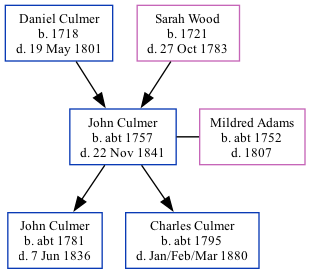

John Culmer c1757 - 1841
[ Home ] | [ Calendar ] | [ Surnames Index ] | [ Family History ]A laborer and the child of Daniel Culmer and Sarah WoodJohn Culmer, the 5 times great-grandfather of Nigel Horne, was born in Stourmouth, Kent, England c. 17571, was baptized in St Nicholas-at-Wade, Kent, England on Sep 4, 1757 and married Mildred Adams (with whom he had 2 children: John and Charles) in Ash, Kent, England on Mar 27, 17793. On Jun 6, 1841, he lived at his birthplace1.
He died on Nov 22, 1841 in Kent2 and was buried in Stourmouth on Nov 26, 18414.
Parents
- Daniel was born in 1718
- Sarah was born in 1721
Children
- John was born c. 1781
- Charles was born c. 1795
Citations
- 1841 England Census Online publication - Provo, UT, USA: The Generations Network, Inc., 2006.Original data - Census Returns of England and Wales, 1841. Kew, Surrey, England: The National Archives of the UK (TNA): Public Record Office (PRO), 1841. Data imaged from the National
- England & Wales, FreeBMD Death Index: 1837-1915 Online publication - Provo, UT, USA: The Generations Network, Inc., 2006.Original data - General Register Office. England and Wales Civil Registration Indexes. London, England: General Register Office. © Crown copyright. Published by permission of the Cont
- Kent, England, Tyler Index to Parish Registers, 1538-1874 Online publication - Provo, UT, USA: Ancestry.com Operations, Inc., 2010. This collection was indexed by Ancestry World Archives Project contributors.Original data - Frank Watt Tyler. The Tyler Collection. Canterbury, Kent, England: The Institute of Herald
- Familysearch.org (www.familysearch.org)
Media
East Kent Burial Index Transcription - GBPRS-D-407029760-1
Canterbury Marriages Transcription - GBPRS-CANT-M-97181770-1
England Deaths and Burials 1538-1991 Transcription - R_276623921
Family Tree
Generated by ged2site. Last updated on Nov 13, 2024